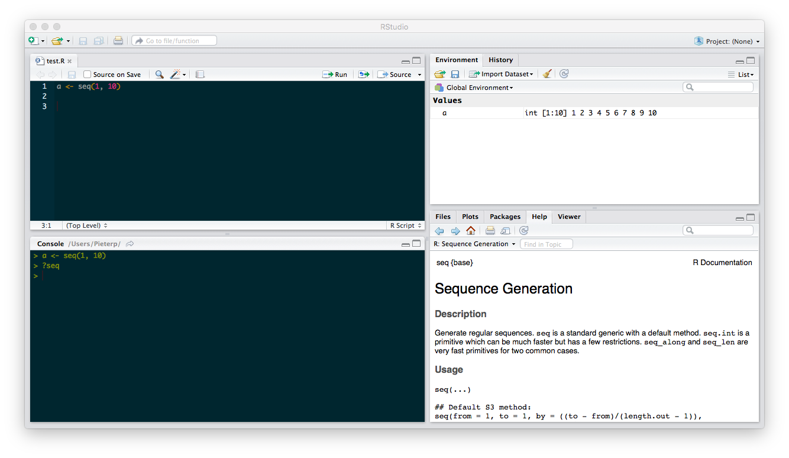

Introduction to R (deprecated)
Introduction to R (deprecated)
Contents
What is R
R is a freely available integrated suite of software facilities for data manipulation, calculation and graphical display. It includes:
- an effective data handling and storage facility,
- a suite of operators for calculations on arrays, in particular matrices,
- a large, coherent, integrated collection of intermediate tools for data analysis, graphical facilities for data analysis and display either on-screen or on hardcopy, and
- a well-developed, simple and effective programming language which includes conditionals, loops, user-defined recursive functions and input and output facilities,
- a large number of user-created packages that extend its capabilities, available on CRAN and Github, including packages for mapping, biology and ecology.
Installation
This manual assumes that you have R and RStudio installed on your computer.
R can be downloaded here.
RStudio is an environment for developing using R. It can be downloaded here. You will need the Desktop version for your computer.
RStudio basics

RStudio has four panels:
- Top left: the editor. This panel will be closed when you start RStudio. Here you can edit and execute scripts. The editor has a button to run the current line or selection, and a button to run the whole script.
- Bottom left: the console. Here you can enter commands or debug your code.
- Top right: environment and history.
- Bottom right: files, plots and help.
An R file with the code used in this introduction is available here.
To get help about a function, type the function name with a question mark in front:
?data.frameIf no documentation is found, you can try:
??data.frameR packages
R packages are reusable libraries of code. To install and load packages from the console (e.g. the ggplot2 R package), do:
install.packages("ggplot2")
library(ggplot2)This only works for packages which are published on CRAN. Nowadays packages are often published on GitHub. To install those packages, we can use the install_github function in the devtools package. Here we use the double colon syntax to automatically load the devtools package.
install.packages("devtools")
devtools::install_github("ropensci/rgbif")Note that several packages include a vignette, which give you a tutorial style introduction to the R package. To view the vignettes of e.g. ggplot2, do:
browseVignettes(package="ggplot2")
# Directly open a vignette
vignette("ggplot2-specs")Data types
Generally, while doing programming in any programming language, you need to use various variables to store various information. The frequently used data types for storing variables are:
Vectors
Vectors are the most basic data structure in R. These are ordered lists of values of a certain class such as numeric, character, or logical. Single values are vectors of length 1:
> a <- 1
> a
[1] 1
> class(a)
[1] "numeric"
> length(a)
[1] 1> b <- "banana"
> b
[1] "banana"
> class(b)
[1] "character"> d <- FALSE
> d
[1] FALSE
> class(d)
[1] "logical"> a <- c(1, 2)
> a
[1] 1 2> b <- seq(1, 10)
> b
[1] 1 2 3 4 5 6 7 8 9 10
> length(b)
[1] 10An empty vector is known as NULL or c().
Matrices
Matrices are two-dimensional data structures. Again, all elements are of the same class.
> matrix(1:6, nrow=3, ncol=2)
[,1] [,2]
[1,] 1 4
[2,] 2 5
[3,] 3 6Data frames
In data frames, the columns can be of different classes.
> d <- data.frame(a=c(5, 6, 7), b=c("x", "y", "z"))
> d
a b
1 5 x
2 6 y
3 7 z> d$a
[1] 5 6 7
> d[,1]
[1] 5 6 7
> d[,"a"]
[1] 1 2 3> d[1]
a
1 5
2 6
3 7
> d[,1,drop=FALSE]
a
1 5
2 6
3 7> d[1,]
a b
1 5 xThe dplyr package has a data frame wrapper, which produces prettier output when printing:
install.packages("dplyr") # skip this if you already have 'dplyr'
library(dplyr)
data(iris)
tbl_df(iris)Lists
A list is a collection of objects.
> a <- data.frame(a=c(1, 2, 3), b=c("x", "y", "z"))
> l <- list(a=a, b=1)
> l
$a
a b
1 1 x
2 2 y
3 3 z
$b
[1] 1Three different ways to access the second element “b”
> l$b
[1] 1
> l[[2]]
[1] 1
> l[["b"]]
[1] 1Writing and reading data
Delimited text files
data <- data.frame(x=10:15, y=40:45) # some data
# tab separated
write.table(data, "data.txt", sep="\t", dec=".", row.names=FALSE)
data <- read.table("data.txt", header=TRUE, sep="\t", dec=".", stringsAsFactors=FALSE)
# comma , separated
write.csv(data, "data.csv", row.names=FALSE)
data <- read.csv("data.csv", stringsAsFactors=FALSE)
# dotcomma ; separated
write.csv2(data, "data2.csv", row.names=FALSE)
data <- read.csv2("data2.csv", stringsAsFactors=FALSE)Excel files
Excel files can be read and written using the xlsx and openxlsx packages. Depending on your system configuration, you may experience problems installing either of these packages (for example, xlsx has a dependency on Java). The openxlsx packages requires a recent R version.
install.packages("openxlsx")
library(openxlsx)read.xlsx() takes two parameters: the name of the Excel file, and the sheet you want to read. The sheet can either be a name or an index, in this case 1 in order to read the first sheet.
library(openxlsx)
data <- data.frame(x = 10:15, y = 40:45) # generate some data
write.xlsx(data, "data.xlsx", sheetName = "intro", row.names = FALSE) # write to Excel
data2 <- read.xlsx("data.xlsx", 1)
data2 <- read.xlsx("data.xlsx", sheet = "intro")ZIP files
This example shows how to download a ZIP file and to read one of the files it contains:
temp <- tempfile()
download.file("http://ipt.vliz.be/eurobis/archive.do?r=nsbs&v=1.1", temp)
data <- read.table(unz(temp, "occurrence.txt"), sep="\t", header=TRUE, stringsAsFactors=FALSE)
View(data) # inspect the dataShapefiles
Shapefiles can be read using the rgdal package. The example below also transforms the data, so it can easily be visualized using ggplot2:
library(maptools)
library(rgdal)
library(ggplot2)
download.file("http://iobis.org/geoserver/OBIS/ows?service=WFS&version=1.0.0&request=GetFeature&typeName=OBIS:summaries&outputFormat=SHAPE-ZIP", destfile="summaries.zip")
unzip("summaries.zip")
shape <- readOGR("summaries.shp", layer="summaries")
shape@data$id <- rownames(shape@data)
df <- fortify(shape, region="id")
data <- merge(df, shape@data, by="id")
# plot the number of species
ggplot() +
geom_polygon(data=data,
aes(x=long, y=lat, group=group, fill=s),
color='gray', size=.2) +
scale_fill_distiller(palette = "Spectral")Working with data
Inspecting data
library(robis)
library(dplyr)
data <- occurrence("Sargassum")
# for this example, convert back from data frame tbl (dplyr) to standard data frame
data <- as.data.frame(data)
head(data) # first 6 rows
head(data, n = 100) # first 100 rows
dim(data) # dimensions
nrow(data) # nmuber of rows
ncol(data) # number of columns
names(data) # column names
str(data) # structure of the data
summary(data) # summary of the data
View(data) # View the data
# now convert to data frame tbl (dplyr)
data <- tbl_df(data)
data
head(data)
print(data, n = 100)Manipulating data
Filtering
library(robis)
library(dplyr)
data <- occurrence("Sargassum")
data %>% filter(scientificName == "Sargassum muticum" & yearcollected > 2005)Reordering
data %>% arrange(datasetName, desc(eventDate))Selecting and renaming columns
data %>% select(scientificName, eventDate, lon=decimalLongitude, lat=decimalLatitude)select() can be used with distinct() to find unique combinations of values:
data %>% select(scientificName, locality) %>% distinct()Adding columns
data %>% tbl_df %>% mutate(zone = .bincode(minimumDepthInMeters, breaks=c(0, 20, 100))) %>% select(minimumDepthInMeters, zone) %>% filter(!is.na(zone)) %>% print(n = 100)Aggregation
data %>% summarise(lat_mean = mean(decimalLatitude), lat_sd = sd(decimalLatitude))
data %>% group_by(scientificName) %>% summarise(records=n(), datasets=n_distinct(datasetName))Restructuring (matrix to long format)
Biodiversity data is often provided as a site x species matrix. The reshape2 package can be used to convert these matrices to a long table format. To demonstrate this functionality, let’s load a site x species matrix which is included in the vegan package (which focuses on biodiversity data analysis).
First install and load the vegan en reshape2 packages:
install.packages("vegan")
install.packages("reshape2")
library(vegan)
library(reshape2)The dataset which we will use is the BCI dataset, these are tree counts in plots on Barro Colorado Island. Load the data with data():
data("BCI")Each row in this matrix represents a plot. This matrix doesn’t have a column for site/plot names so let’s add that:
BCI$plot <- row.names(BCI)Now use the melt function to convert from matrix to long format. Pass the following arguments: variable.name (this corresponds to the columns, so scientific names), value.name (a name for the values), and id.vars (the not measured variables, in this case plot).
long <- melt(BCI, variable.name = "scientificName", value.name = "count", id.vars = "plot")You now have your data in the long format:
> head(long)
plot scientificName count
1 1 Abarema.macradenia 0
2 2 Abarema.macradenia 0
3 3 Abarema.macradenia 0
4 4 Abarema.macradenia 0
5 5 Abarema.macradenia 0
6 6 Abarema.macradenia 0Restructuring (long format to matrix)
This example converts a dataset from OBIS to a matrix format, which is more suitable for community analysis:
library(robis)
library(reshape2)
data <- occurrence(resourceid = 586)
wdata <- dcast(data, locality ~ scientificName, value.var = "individualCount", fun.aggregate = sum)Plotting
In this example, data for one species is extracted from an OBIS dataset. Density and depth are visualized using the ggplot2 package:
library(robis)
library(dplyr)
library(reshape2)
library(ggplot2)
data <- occurrence(resourceid = 586)
afil <- data %>% filter(scientificName == "Amphiura filiformis") %>% group_by(locality) %>% summarise(n = mean(individualCount), lon = mean(decimalLongitude), lat = mean(decimalLatitude), depth = mean(minimumDepthInMeters))
ggplot() + geom_point(data = afil, aes(lon, lat, size = n, colour = depth)) +
scale_colour_distiller(palette = "Spectral") +
theme(panel.background = element_blank()) + coord_fixed(ratio = 1) + scale_size(range = c(2, 12))Mapping
The leaflet can be used to create interactive web based maps. The example below shows the results of an outlier analysis of Verruca stroemia occurrences:
library(leaflet)
data <- occurrence("Verruca stroemia")
data$qcnum <- qcflags(data$qc, c(24, 28))
colors <- c("red", "orange", "green")[data$qcnum + 1]
m <- leaflet()
m <- addProviderTiles(m, "CartoDB.Positron")
m <- addCircleMarkers(m, data=data.frame(lat=data$decimalLatitude, lng=data$decimalLongitude), radius=3, weight=0, fillColor=colors, fillOpacity=0.5)
m